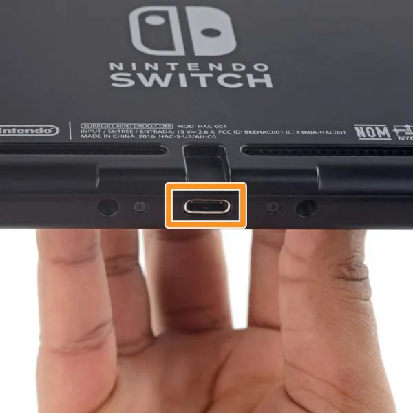

Frequently Asked Questions
Can I play while charging?
Yes. Connect the AC adapter to the USB-C port on the bottom of the console while playing in handheld mode. Charge time will be slower during gameplay.

What happens if a Joy-Con disconnects?
The game will pause or prompt you to reconnect. Re-attach the Joy-Con to the console rail or press any button to re-sync wirelessly.

Do I need the internet to play games?
No. Physical and downloaded games can be played offline. Internet is required for online multiplayer, the eShop, and system updates.